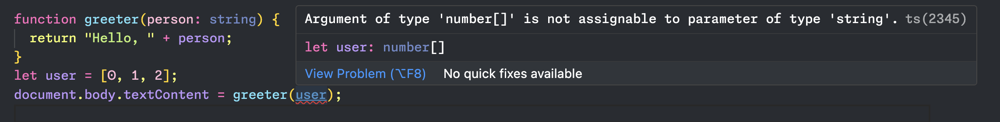
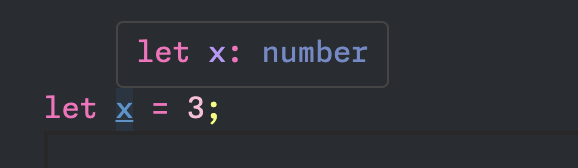
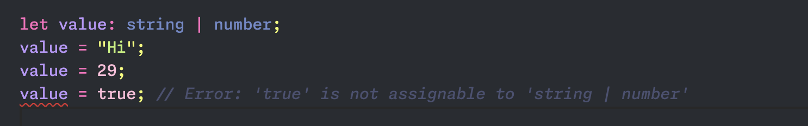
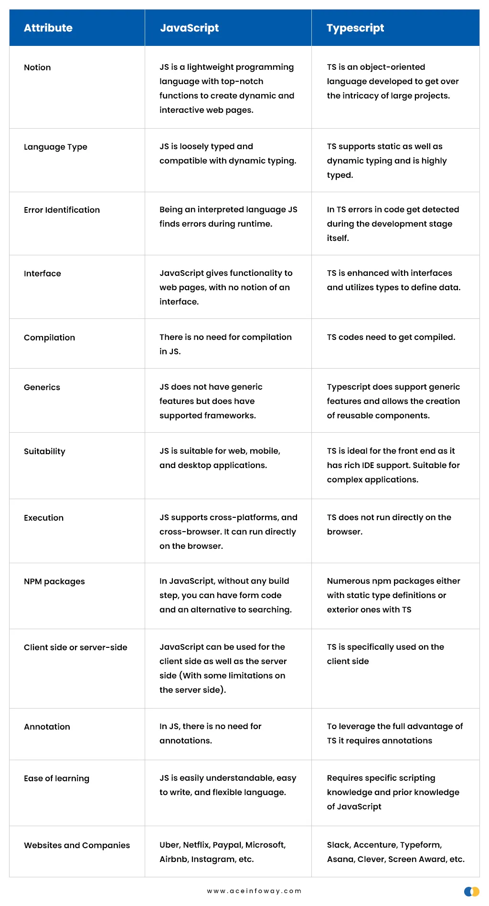

1. Въведение
Сферата на уеб програмирането и разработката е една от най-динамичните в днешно време. В нея иновациите са постоянни и адаптивността на уеб програмистите към тях е едно от ключовите им качества. В тази сфера TypeScript се очертава като основна сила, която променя начина на създаване на приложения. TypeScript е “надмножество” [1] на JavaScript, което въвежда промяна във вече съществуващата парадигма, като осигурява стабилно решение на проблеми, които не рядко съпътстват разбработването на широкомащабен и поддържаем софтуер. Този реферат се впуска в цялостно изследване на TypeScript, преминавайки през неговия произход, основни характеристики, практически приложения и трансформиращото въздействие, което упражнява в съвременния пейзаж на изграждане на уеб приложения. Излизайки отвъд границите на конвенционалния JavaScript, TypeScript не само адресира съществуващите проблеми и “спънки” в езика, но също така оборудва разработчиците с усъвършен набор от инструменти, предлагащ дълбоко подобрение в качеството на кода и мащабируемостта.
2. Историческо развитие
- Зараждане
- 2012-2015: Ранни дни на употреба [2]
- 2015-2018 TypeScript става широко използван [2]
- 2018 - Днес [2]
Нуждата от TypeScript се появява по време на разработката на текстовия редактор VS Code от Microsoft.[3] В толкова голям проект липсата на инструмент, който предоставя информация за използваните типове преди да бъде изпълнен кода, се превърнала в проблем. И така, през октомври 2012 година, TypeScript е обявен за първи път от Microsoft.[2] Една от главните първоначални цели на Typescript била да предостави функционалност, която да поддържа статично типизиране и функционалности за обектно-ориентирано програмиране, за да спомогне за поддръжката и създаването на големи JavaScript проекти.

Фигура 1. Примерен код на TypeScript
Кратък пример, в който използвайки TypeScript уточняваме типа на параметрите на функция, която връща сумата на две числа. Също така сме специфицирали и типа, който връща самата функция. Бидейки “надмножество” на JavaScript, TypeScript има съвместимост с вече съществуващ JavaScript код. Компилаторът на TypeScript (tsc) транспилира кода на TypeScript в JavaScript, което му позволява да работи във всяка среда, която поддържа JavaScript. Това дава възможност на разработчиците постепенно да започнат да използват TypeScript в своите проекти без необходимостта от пренаписване на цялата база от код в проекта.
Разработчиците бързо приели TypeScript в ранните му години като за това особено спомогнало излизането на библиотеката Angular 2 през 2014 година. Тя избрала да използва именно TypeScript като свой основен език. Това решение довело до по-голям интересен към технологията от страна на разработчиците. През този период TypeScript претърпява няколко големи издания, въвеждащи нови функции и подобрения на езика. Софтуерните разработчиците все повече признавали стойността, която технологията им носела по отношение на безопасната работа с типове, по-добрите налични инструменти, както и поддръжката на кода.
Годините 2015 до 2018 г. белязаха важна глава в пътя на TypeScript, характеризираща се с широко приемане, интеграция с основни рамки (React, Vue), подобрения в системата за типове и процъфтяваща общност. Успехът на TypeScript през този период постави основата за продължаващия му растеж и влияние през следващите години.
Към момента TypeScript е един от основните елементи за разработка на уеб софтуер. Езикът бива обновяван с редовни версии, въвеждащи нови функционалности и подобрения. Успоредно с това, по-широката общност на JavaScript възприе TypeScript с популярни проекти като Next.js, NestJS и GraphQL, предоставящи първокласна поддръжка на TypeScript.
3. Ключови функционалности
- Типови анотации [4]
- Изводи за типове [4]
- string
- number
- boolean
- array
- any
- void
- null
- undefined
- symbol
- object
- Generics (Генерични типове)
- Union Types (“Обединени типове”)
Както видяхме по-горе, TypeScript предоставя възможност за анотиране на типовете на използваните променливи, аргументи на функции, на самите функции. Тази функционалност улеснява, както хората, които пишат и поддържат кода, така и самия TypeScript компилатор, давайки му информация какъв тип данни да очаква.
Фигура 2. Примерен код за типови анотации
Извикването на greeter с масива от числа user би хвърлило грешка, понеже не можем да подадем аргумент, който е масив от числа на функция, която очаква аргументът ѝ да е низ.
Изводът за тип на Typescript позволява на разработчиците да използват само изрична анотация на типа, където е необходимо, тъй като той автоматично извежда или определя типа данни на променлива въз основа на нейната употреба и контекст.
Фигура 3. Примерен код за извод на тип
Благодарение на тази функционалност, Typescript е известен също като незадължителнo статично типизиран език, тъй като не налага статично типизиране за всяка променлива или функция. Извеждането на тип е фундаментална характеристика в Typescript, тъй като играе решаваща роля за превръщането на езика в статично типизиран и удобен за разработчици.[5]
TypeScript предлага следните примитивни типове [7]:
Основна част от софтуерното инженерство е изграждането на компоненти, които могат да се използват
повторно лесно. Такива компоненти предлагат много голяма степен на гъвкавост. [8]
Генеричните типове са мощна функционалност в Typescript, която ни позволява да пишем по-гъвкав код
чрез създаване на функции, класове или интерфейси, които могат да работят с различни типове данни,
като същевременно запазват безопасността на типа. Те обикновено се описват с ъглови скоби (<>) и
общия тип T,
Фигура 4. Примерен код за генерични типове [9]
Типовата система на TypeScript позволява създаването на нови типове от съществуващи, използвайки голямо разнообразие от оператори. [11] Такива типове осигуряват голяма степен на гъвкавост.
Как се дефинира обединен тип? [12]
Първият начин за комбиниране на типове е обединеният тип. Той е тип, образуван от два или повече други типа, представляващи стойности, които могат да бъдат всеки един от тези типове. Всеки от тези типове се нарича член на съюза.
Фигура 5. Примерен код за обединен тип
4. TypeScript срещу JavaScript
За да разберем разликите между двата езика, първо трябва да имаме базова представа и за двата.
- Какво е JavaScript?
- Какво е TypeScript?
- Таблица със сравнение [13] 
JavaScript е базиран на прототипи скриптов език, който е широко използван за интерактивни уеб разработки. Той позволява на разработчиците да създават скриптове от страна на клиента, които взаимодействат с потребителя, манипулират обектния модел на документа (DOM) и правят асинхронни заявки към сървърите.
TypeScript е строго типизиран и компилиран език за програмиране, използващ се за скриптиране на тежки и сложни проекти за уеб разработка. TypeScript се счита както за език, така и за набор от инструменти. [13]
5. Екосистема и инструменти
TypeScript предлага стабилен набор от инструменти за подобряване на процеса на разработка и улесняване на управлението на широкомащабни приложения. Тези инструменти обхващат редица области, от редактиране на код до компилация и отстраняване на грешки. По-долу са някои ключови инструменти на TypeScript:
-
TypeScript компилатор (
tsc): [15] -
tsconfig.json:[16] - ESLint with TypeScript:
- Какво е ESLint? [18]
- Правила в ESLint [19]
- TypeScript Playground:
- TypeScript Language Service:
- Visual Studio Code (VS Code)
- Declaration Files (.d.ts)
Компилаторът на TypeScript (tsc) е инструмент, който транспилира TypeScript код в JavaScript. Той проверява за грешки в типа, компилира TypeScript файлове и генерира съответните JavaScript файлове. Изпълнението на tsc в проект инициира процеса на компилация.
tsconfig.json файлът се използва за конфигуриране на поведението на компилатора на
TypeScript. Той позволява на разработчиците да определят опции на компилатора, като целева версия на
ECMAScript и изходна директория. Добре конфигурираният tsconfig.json е от решаващо значение за
ефективното управление на TypeScript проект.
@typescript-eslint/eslint-plugin е приставка за ESLint, използвана за зареждане на
потребителски правила и списъци с конфигурации на правила от typescript-eslint. Тези
правила разчитат на @typescript-eslint/parser за анализиране на TypeScript код в ESLint-съвместими
възли, както и осигуряване на поддръжка на TypeScript програми.[17]
ESLint е конфигурируем JavaScript линтер. Той помага на ползвателите си да намират и коригират проблеми в техния JavaScript код. Проблемите могат да бъдат всякакви - от потенциални грешки по време на изпълнение, до неспазване на най-добрите практики, до проблеми със стила.
Правилата са основният градивен елемент на ESLint. Правилото потвърждава дали даден код отговаря на определено очакване и какво да се направи в противен случай. Правилата могат също да съдържат допълнителни опции за конфигурация, специфични за това правило.
TypeScript Playground е онлайн инструмент, който позволява на разработчиците да експериментират с TypeScript код в браузър. Той предоставя бърз начин за тестване на функциите на TypeScript, преглед на компилиран JavaScript изход и споделяне на кодови фрагменти.
Езиковата услуга TypeScript е основен компонент, който захранва функции като довършване на код, навигация и проверка на грешки в редактори като VS Code [20]. Работи във фонов режим, за да предостави богати езикови функции по време на писане на код.
VS Code е популярен и лек редактор на код, разработен от Microsoft. Той осигурява отлична поддръжка на TypeScript веднага, включително функции като IntelliSense за автоматично довършване [21], проверка на грешки в реално време и интегрирано отстраняване на грешки. Разширението TypeScript за VS Code допълнително подобрява процеса на разработка..
Файловете с декларации (.d.ts) предоставят информация за типа за съществуващи JavaScript библиотеки. Те позволяват на TypeScript да разбере формата и типовете на променливите и функциите във външния JavaScript код. Хранилището DefinitelyTyped е ценен източник за файлове с декларации, предоставени от общността.
6. TypeScript в действие
„TypeScript в действие“ се отнася до практическото приложение на TypeScript в сценарии от реалния свят, демонстрирайки как разработчиците използват неговите функции за изграждане на стабилен и поддържаем софтуер. Един общ преглед би бил следният:
- Разработка на мащабируеми приложения
- Интеграция с Frameworks
- TypeScript в разработка на Fullstack приложения
- Активна общност
TypeScript се използва широко за изграждане на широкомащабни приложения, където предимствата на статичното писане стават особено очевидни. Възможността за дефиниране на изрични типове подобрява яснотата на кода, намалява грешките и прави кодовата база по-мащабируема.
TypeScript се интегрира безпроблемно с популярни frameworks като React [22], Angular [23] и Vue.js [24].
TypeScript не е ограничен до frontend частта на приложения - той все повече се използва и за разработка от страна на сървъра. С технологии като Node.js и рамки като Nest.js разработчиците могат да използват TypeScript в целия стек за последователно и безопасен процес при разработка.
Активната общност на TypeScript допринася за изобилие от проекти с отворен код. Проучването на тези проекти на платформи като GitHub дава представа за това как разработчиците използват TypeScript в различни контексти и индустрии.
7. Предизвикателства
Въпреки че TypeScript предлага множество предимства, той не е без предизвикателства и критики. Разглеждането на тези аспекти е от решаващо значение за цялостното разбиране на езиковия пейзаж. Ето някои често срещани предизвикателства и критики, свързани с TypeScript:
- Крива на обучение:
- Разходи за инструменти:
- Интеграция с Build Systems:
- Многословност на кода:
- Съвместимост с екосистемата на JavaScript:
- Баланс на строгост и гъвкавост:
- Време за изграждане:
- Разпокъсване на общността:
- Зрялост на екосистемата:
TypeScript въвежда допълнителни концепции като статично въвеждане, интерфейси и пояснения за тип, които могат да ускорят кривата на обучение за разработчиците, преминаващи от JavaScript. Това може да бъде особено предизвикателство за начинаещите в програмирането.
Използването на TypeScript често изисква допълнителни инструменти и стъпки за изграждане, което усложнява процеса на разработка. Конфигурирането и поддържането на инструменти като компилатора на TypeScript (tsc) и системите за изграждане може да се възприема като излишно от някои разработчици.
Интегрирането на TypeScript в съществуващи системи за изграждане, особено сложни, може да бъде предизвикателство. Разработчиците могат да срещнат проблеми, когато конфигурират TypeScript с инструменти като Webpack, особено в проекти със сложни настройки.
Статичното типизиране на TypeScript, макар и полезно, понякога може да доведе до по-подробен код в сравнение с JavaScript. Необходимостта от изрични анотации и интерфейси на типа може да се разглежда като добавяне на ненужна церемония, особено в по-малки проекти.
Докато TypeScript е проектиран да бъде надмножество на JavaScript, може да има предизвикателства при работа със съществуващ JavaScript код или библиотеки. Файловете с декларации (.d.ts) често са необходими за предоставяне на информация за типа за JavaScript библиотеки и качеството на тези файлове с декларации може да варира.
Строгата проверка на типа на TypeScript може да се разглежда като прекалено ограничаваща от някои разработчици. Постигането на точния баланс между налагането на безопасност на типа и позволяването на гъвкавост може да бъде предизвикателство, което води до дебати относно целесъобразността на определени езикови характеристики.
За големи кодови бази статичният анализ на TypeScript може да доведе до по-дълго време за изграждане в сравнение с чисто динамични езици като JavaScript. Това може да повлияе на продуктивността на разработчиците, особено по време на итеративни цикли на разработка.
Екосистемата на JavaScript е обширна и разнообразна, с множество рамки, библиотеки и инструменти. Възприемането на TypeScript не е еднакво във всички проекти, което води до фрагментирана общност, където някои проекти приемат TypeScript, докато други не.
Въпреки че TypeScript получи широко разпространение, някои аспекти на неговата екосистема, като определени библиотеки или инструменти, може да не са толкова зрели или добре поддържани, както в по-широката екосистема на JavaScript.
Важно е да се отбележи, че тези предизвикателства и критики не отричат предимствата на TypeScript, а по-скоро подчертават области, в които разработчиците могат да срещнат компромиси или предпочитания въз основа на контекста на проекта и експертния опит на екипа. TypeScript продължава да се развива и много от тези предизвикателства се адресират активно от общността за разработка на езика.
8. Общност и поддръжка
Общността на TypeScript е жизнена и активна екосистема, включваща разработчици, сътрудници и организации, които колективно допринасят за растежа, подобряването и широкото приемане на TypeScript. Ето някои аспекти на общността на TypeScript и наличната поддръжка:
- Сътрудничество с отворен код:
- DefinitelyTyped Repository:
- Форуми и дискусии на общността:
- Образователни ресурси:
- Срещи и конференции:
- Ангажираност в социалните медии:
- Време за изграждане:
- Поддръжка на инструменти и разширения:
- Участието на Microsoft:
- Проекти, управлявани от общността:
- Приемане от големи организации:
TypeScript е проект с отворен код, разработен и поддържан от Microsoft. Общността участва активно в неговото развитие, като допринася за функции, корекции на грешки и документация. Изходният код е достъпен в GitHub, което позволява на разработчиците по целия свят да участват в дискусии, да изпращат проблеми и да допринасят с код.
DefinitelyTyped е управлявано от общността хранилище в GitHub, което хоства декларационни файлове на TypeScript (.d.ts) за хиляди JavaScript библиотеки. Това съвместно усилие гарантира, че разработчиците могат безпроблемно да използват TypeScript с широк набор от съществуващи JavaScript библиотеки и рамки.
Общността на TypeScript участва в дискусии на различни платформи, включително официалните форуми на общността на TypeScript, Stack Overflow и Reddit. Тези форуми предоставят места за разработчиците да търсят помощ, да споделят знания и да обсъждат най-добри практики.
Общността на TypeScript активно създава образователно съдържание, включително уроци, публикации в блогове и видео курсове. Това помага на новодошлите да научат езика и да бъдат информирани за най-добрите практики. Самият уебсайт на TypeScript предоставя изчерпателна документация и наръчник за задълбочено обучение.
Ентусиастите на TypeScript често организират и участват в местни срещи и глобални конференции. Тези събития предлагат възможности за работа в мрежа, учене от експерти и информиране за най-новите разработки в екосистемата на TypeScript.
Общността на TypeScript е активна в социални медийни платформи като Twitter, където разработчиците споделят прозрения, обсъждат актуализации и насърчават инициативи на общността. Следването на подходящи хаштагове като #TypeScript може да осигури емисия в реално време за дейности на общността.
За големи кодови бази статичният анализ на TypeScript може да доведе до по-дълго време за изграждане в сравнение с чисто динамични езици като JavaScript. Това може да повлияе на продуктивността на разработчиците, особено по време на итеративни цикли на разработка.
IDE и редакторите на код, особено Visual Studio Code, предлагат стабилна поддръжка за TypeScript. Разширението TypeScript за VS Code, например, се поддържа активно и предоставя функции като IntelliSense, отстраняване на грешки и интегрирана документация.
Microsoft, като основен спонсор на TypeScript, играе решаваща роля в предоставянето на ресурси, поддръжка и лидерство за езика. Компанията активно се ангажира с общността, вслушва се в обратната връзка и ръководи развитието на TypeScript.
Появиха се различни управлявани от общността проекти, разширения и инструменти за подобряване на екосистемата на TypeScript. Тези проекти често отговарят на специфични нужди или предоставят допълнителни функции извън основния език TypeScript.
Възприемането на TypeScript от големи организации допринася за силата на общността. Компании като Google, Airbnb и Slack използват TypeScript в своите проекти, като оказват влияние върху развитието на езика и демонстрират неговата приложимост в различни и взискателни среди.
Духът на сътрудничество на TypeScript общността, съчетан с нейния ангажимент за приобщаване и споделяне на знания, допринася за динамична и подкрепяща среда. Независимо дали чрез онлайн форуми, образователни ресурси или лични събития, общността играе ключова роля в успеха и еволюцията на TypeScript.
9. Обобщение
В заключение, TypeScript разкрива език, който не само е преодолял предизвикателствата на своите предшественици, но също така е издълбал значителна ниша в пейзажа на съвременното уеб развитие. От своето скромно начало през 2012 г. до масовото му приемане през следващите години, TypeScript се доказа като мощен съюзник за разработчиците, търсещи баланс между гъвкавостта на JavaScript и устойчивостта на статичното писане.
Пътуването през ключовите характеристики на TypeScript, неговата интеграция с популярни рамки и въздействието му върху проекти от реалния свят показва гъвкавостта и приложимостта на езика в спектър от сценарии за разработка. Способността на TypeScript да подобрява четимостта на кода, да улавя грешки в началото на процеса на разработка и да насърчава положителна обратна връзка в рамките на общността затвърди позицията му като основен елемент в инструментариума на разработчиците.
Въпреки това, както при всяка друга технология, TypeScript не е имунизиран срещу предизвикателства. Неговата крива на обучение, допълнителни разходи за инструменти и балансът между строгост и гъвкавост представляват съображения за разработчиците. Признаването на тези предизвикателства е от решаващо значение, тъй като насърчава цялостно разбиране на силните страни на TypeScript и областите за подобрение.
Общността на TypeScript е свидетелство за успеха на езика. От сътрудничество с отворен код и образователни ресурси до ръководени от общността проекти и глобални събития, разработчиците по целия свят активно допринасят за развитието и поддръжката на TypeScript. Този дух на сътрудничество, съчетан с продължаващото участие на Microsoft, гарантира, че TypeScript остава в челните редици на иновациите и адаптирането в непрекъснато развиващата се област на уеб разработката.
В идните години пътят на TypeScript обещава да разгърне нови глави, като допълнително усъвършенства възможностите си и разшири влиянието си. Тъй като продължава да дава възможност на разработчиците да създават мащабируеми, поддържаеми приложения, TypeScript остава динамична сила, навигираща по границите на уеб разработката с устойчивост, адаптивност и ангажимент за напредък в изкуството и науката на кодирането.
10. Източници
- A Typed Superset of JavaScript, официална документация на TypeScript
- A Brief History of TypeScript: From Origin to Modern Adoption
- TypeScript Origins: The Documentary
- Type annotations, официална документация на TypeScript
- A Brief Summary of the Main Features of TypeScript - Type inference
- Type Inference, официална документация на TypeScript
- Everyday Types, официална документация на TypeScript
- Generics, официална документация на TypeScript
- Generics, статия в Medium
- Union Types, Medium
- Union Types, официална документация на TypeScript
- Defining a Union Type, официална документация на TypeScript
- Which is more worthwhile, TypeScript or JavaScript?
- Сравнение между TypeScript и JavaScript oт статията в Medium [13]
- TypeScript compiler, официална документация
- What is a tsconfig,json
- TypeScript ESlint plugin
- What is ESlint
- ] ESLint rules
- TypeScript language service
- TypeScript IntelliSense in VS Code
- React with TypeScript
- Angular with TypeScript
- Vue.js with TypeScript
-
Списък с фигури с примерен код:
- Фигура 1. Примерен код на TypeScript
- Фигура 2. Примерен код за типови анотации
- Фигура 3. Примерен код за извод на тип
- Фигура 4. Примерен код за генерични типове [9]
- Фигура 5. Примерен код за обединен тип